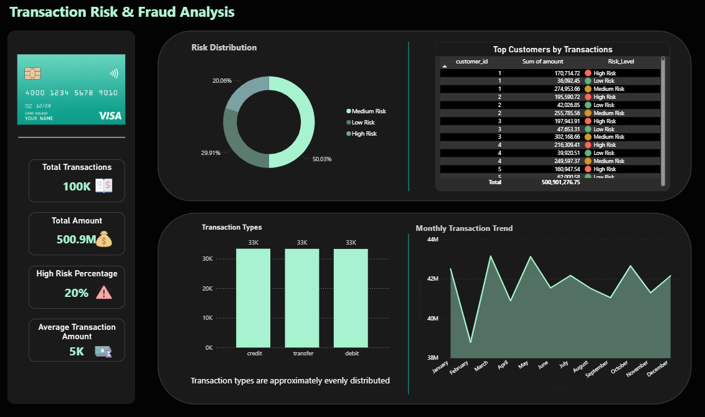

Transaction Risk & Fraud Analysis
• 20% of transactions (~20K out of 100K) are classified as high risk → indicates significant fraud exposure requiring focused monitoring
• Transaction types are approximately evenly distributed (~33K each) → risk is spread across all transaction categories
• Total analyzed amount reached ~500.9M → highlights high financial exposure where small fraud rates can lead to large losses
Tools: